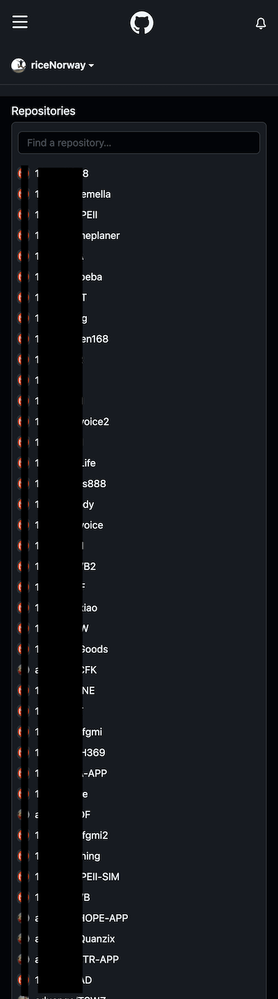

背景
公司產品的核心功能是直銷獎金結算。但公司初期人手不足，所以我自告奮勇想嘗試看看這一部分能否勝任。上司應該是看我憨膽，便先丟給我一間有需求變更(就是小改制度)的客戶。
嘗試到實作
再來就是把需求搞清楚，邏輯通了之後再來著手進行。完工後測試相當順利，都有命中，沒多久便接下第一個客戶的獎金結算需求。記得第一間客戶是X震集團旗下的一家子公司，一開始接洽的業務以為規模不大，就把這間客戶丟給我做。測試上線之後，沒想到每個月的營業額都好幾千萬，甚至幾個月做促銷都有過億(我們系統也有涵蓋進銷存、營業報表等等，因為計算獎金的基礎與營業額密不可分，甚至制度規劃的不好可能會發爆)。這間客戶真的讓我學習到非常多，也感謝我們的顧問很有耐心的跟我切磋指導。
持續
還有一家客戶位於桃園，營業項目是化妝品，月營業額偶而會過億。有時候會在新聞上看到他們捐了幾台救護車，就會跟內人炫耀，他們的獎金是我寫的！幾自豪的..
...還有賣健康餅乾的、美國賣茶葉的、越南、中國(沒錯是中國XD)...偷偷算了一下，我負責的客戶應該有總數的一半
每一間客戶的獎金制度五花八門，需要一點時間消化理解，然後轉化成程式碼。長久下來個人認為邏輯是其次，最大的關卡在於溝通。因為客戶闡述的需求，很難百分之百複製到顧問手上，進行需求分析也難免會有出入，再來才到我這邊。所以我都會跟顧問再三確認客戶的需求，必要時再次做需求確認。其實更好的做法是做名詞定義，一些系統商常用的名詞跟客戶先做確認(或者有特別需求的客戶也能另開名詞定義的版本)，等雙方都有在同一個頻道上再來進行開發。

⬆算一下我handle獎金的部分大約佔了一半的客戶。
後來跟上司合力不斷的做出歸納，把經驗總結、模組化，提升開發效率與程式的復用性。不過因為獎金複雜度高(晉升、獎金合格條件、會員組織、結算週期...)，加上各家客戶需求都不一樣，需要更多經驗的積累，不斷優化模組，目標是不斷縮短開發時間。